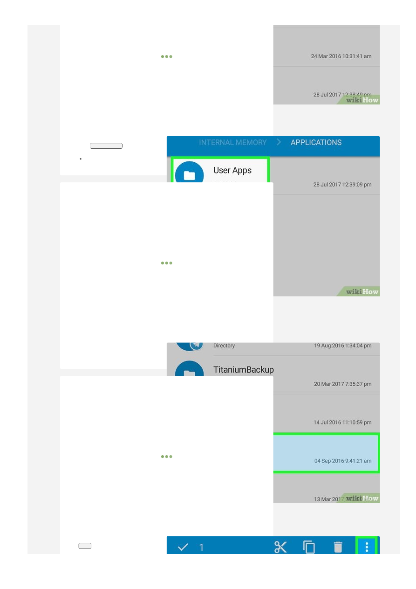

smartIndent: boolean
Whether to use the context-sensitive indentation that the mode
provides (or just indent the same as the line before). Defaults to true.
tabSize: integer
The width of a tab character. Defaults to 4.
indentWithTabs: boolean
Whether, when indenting, the first N*
tabSize
spaces should be
replaced by N tabs. Default is false.
electricChars: boolean
Configures whether the editor should re-indent the current line when a
character is typed that might change its proper indentation (only
works if the mode supports indentation). Default is true.
specialChars: RegExp
A regular expression used to determine which characters should be
replaced by a special
placeholder
. Mostly useful for non-printing
special characters. The default is
/[\u0000-\u001f\u007f-
\u009f\u00ad\u061c\u200b-\u200f\u2028\u2029\ufeff\ufff9-
\ufffc]/
.
specialCharPlaceholder: function(char) → Element
A function that, given a special character identified by the
specialChars
option, produces a DOM node that is used to represent
the character. By default, a red dot (
•
) is shown, with a title tooltip to
indicate the character code.
direction: "ltr" | "rtl"
Flips overall layout and selects base paragraph direction to be left-to-
right or right-to-left. Default is "ltr". CodeMirror applies the Unicode
Bidirectional Algorithm to each line, but does not autodetect base
direction — it's set to the editor direction for all lines. The resulting
order is sometimes wrong when base direction doesn't match user
intent (for example, leading and trailing punctuation jumps to the
wrong side of the line). Therefore, it's helpful for multilingual input to
let users toggle this option.
rtlMoveVisually: boolean
Determines whether horizontal cursor movement through right-to-left
(Arabic, Hebrew) text is visual (pressing the left arrow moves the
cursor left) or logical (pressing the left arrow moves to the next lower
index in the string, which is visually right in right-to-left text). The
default is
false
on Windows, and
true
on other platforms.
keyMap: string
Configures the key map to use. The default is
"default"
, which is the
only key map defined in
codemirror.js
itself. Extra key maps are
found in the
key map
directory. See the
section on key maps
for more
information.
extraKeys: object
Can be used to specify extra key bindings for the editor, alongside the
ones defined by
keyMap
. Should be either null, or a valid
key map
value.
configureMouse: fn(cm: CodeMirror, repeat: "single" |
"double" | "triple", event: Event) → Object
Allows you to configure the behavior of mouse selection and dragging.
The function is called when the left mouse button is pressed. The
returned object may have the following properties:
unit: "char" | "word" | "line" | "rectangle" |
fn(CodeMirror, Pos) → {from: Pos, to: Pos}
The unit by which to select. May be one of the built-in units or a
function that takes a position and returns a range around that, for a
custom unit. The default is to return
"word"
for double clicks,
"line"
for triple clicks,
"rectangle"
for alt-clicks (or, on Chrome
OS, meta-shift-clicks), and
"single"
otherwise.
extend: bool
Whether to extend the existing selection range or start a new one.
By default, this is enabled when shift clicking.
addNew: bool
When enabled, this adds a new range to the existing selection,
rather than replacing it. The default behavior is to enable this for
command-click on Mac OS, and control-click on other platforms.
moveOnDrag: bool
When the mouse even drags content around inside the editor, this
4
Tap
User Apps
.
This option will display only the user-installed apps.
You can also tap
System Apps
here if you wish to extract the APK of a pre-
installed app.
5
Tap and hold an app from which you wish to extract an APK.
After a second, you
should see several icons appear at the top of the screen.
Tap
⋮
.
This option is in the top-right corner of the screen.
{kind=link}
{kind=link}
{kind=link}